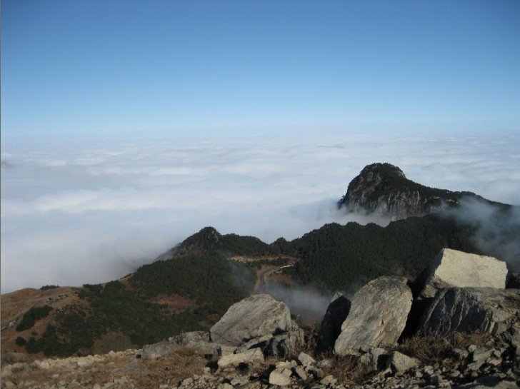

发信人: zhuobengang (卓本刚), 信区: outdoor
标 题: 【召集帖】3月17/18日 三尖连穿
发信站: 饮水思源 (2012年03月11日00:02:08 星期天)
野协2012年3月17/18日 三尖连穿召集帖
太子尖（海拔1558米）——百丈岭（1334）——童公尖（1558）穿越路线（以下简称“三
尖穿越”）位于临安西部，南起清凉峰一带，北至浙西大峡谷白马崖一带。全程路线因都
在山脊上走，故视野开阔，山两边景色尽收眼底，经常能看到云海云瀑，冬天能看到雾松
等壮丽景色。三尖穿越全路段沿途攀爬的的地方不多，安全性好，虽然线路略长，仍然是
一条不错的徒步穿越路线。
screen.width - 200){this.width = screen.width - 200}">
具体的行程如下:
上海 -马啸- 太子尖山腰-太子尖——上马啸岭——中马啸岭——花石岩——下马啸岭——
避风岭——百丈岭——大牛屎——花岩石（雷达站废墟）——童公尖-杭州-上海
活动时间：3月16日晚六点出发，18日傍晚回归~
报名截止时间：周一（12号）晚上12点。
活动强度：中等偏上（有一定难度）
费用：
总计：会员：235/人非会员：265（多退少补）
营地费用：10元/人
下山腐败：25元/人
装备费用：50元/人
户外险：10/人
车费：140/人
报名方式：请留意最近协会召集短信，BBS中outdoor版，人人主页和野协召集人,有疑问请
与18801965298 卓同学联系（电话联系）。
活动行程：
第一天（周五）
18:00—庙门出发（车上做自我介绍及破冰游戏，补充睡眠）
23:30--到达山腰，搭帐篷，进晚餐，睡觉
第二天（周六）
7：00起床；
8点开始上山；
9：00左右到达太子尖，修整一会后，接着是一段长距离山脊；
12：00到花石岩，吃午饭；
17：00左右到百丈岭营地，扎营；
当天行程24公里。
第二天（周日）
6：00起床；
7：00开始向童公尖出发；
8:00 到达大牛屎(1476米),天气好可以看到黄山顶峰
9:00 到达花岩石（雷达站废墟）
10:30 登顶童公尖（1558米），第三尖完成
13：40 到达山脚，腐败进餐
还在犹豫做什么，那就和野协一起三尖，过个不一样的周末吧！！！！！！
！
注意事项：
1.以上行程为基本行程，领队有权根据天气、队员状态等情况调整活动计划，不承担由此
造成的损失和责任。
2.野外活动不同于一般旅游，参加活动的队员须听从领队和向导的组织安排，严禁野外用
火吸烟，严禁擅自离队，所有活动安全第一，对于无视指挥所造成的后果由自己负责。
3.无论什么时候，一旦觉得事情应付不来，就要讲出来。艰难的路段最好请人帮助，甚至
放弃不爬，也比发生危急情况要好。
4.登山应发扬团队精神，途中留意同伴情况，危险地段互相提醒或协助通过。
5. 迷路时应折回原路，或寻找避难处静待救援；除保持体力外，并安抚队员平稳情绪。
6．提倡环保，注意保护环境，请将垃圾带离及小心用火，切勿乱丢烟蒂，引起山火。
7. 安全第一，切忌个人英雄主义，要量力而为，集体活动以大局为重，不搞个人主义，不
得单独行动。
8.请守时，对自己负责，对他人负责
 screen.width - 200){this.width = screen.width - 200}">
screen.width - 200){this.width = screen.width - 200}">
screen.width - 200){this.width = screen.width - 200}">
--
小事情，好事情。
※ 来源:·饮水思源 bbs.sjtu.edu.cn·[FROM: 121.248.2.30]
※ 修改:·zhuobengang 于 2012年03月11日00:34:48 修改本文·[FROM: 121.248.2.30]
※ 修改:·zhuobengang 于 2012年03月11日09:09:03 修改本文·[FROM: 121.248.15.30]
※ 修改:·zhuobengang 于 2012年03月11日09:12:03 修改本文·[FROM: 121.248.15.30]
※ 修改:·zhuobengang 于 2012年03月11日09:12:46 修改本文·[FROM: 121.248.15.30]
※ 修改:·zhuobengang 于 2012年03月11日09:13:20 修改本文·[FROM: 121.248.15.30]
|